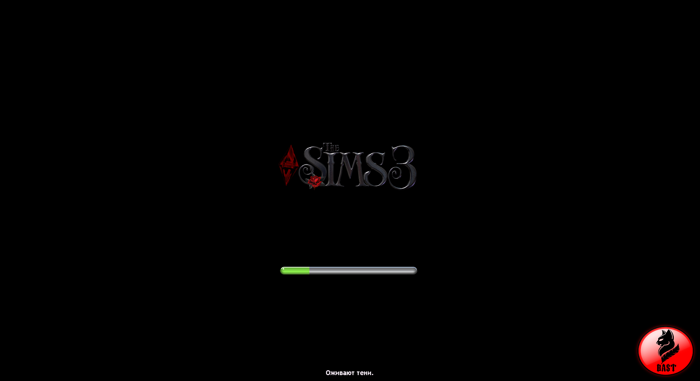

Погрузитесь в мир "The Sims"
Здесь вы можете узнать больше о нашей увлекательной игре, которая погружает вас в мир приключений и захватывающих событий!
"The Sims" — это популярная серия симуляторов жизни, разработанная компанией Maxis и изданная Electronic Arts. Игра позволяет игрокам создавать и управлять виртуальными персонажами, которых называют "Симы", а также строить и обустраивать их дома. Вот более подробное
Вот более подробное описание игры:
Основные особенности:
- Создание персонажей: Игроки могут настраивать внешность, одежду и характер своих Симов. Выбор различных черт характера определяет, как Симы будут взаимодействовать друг с другом и с окружающим миром.
- Строительство и обустройство: Игроки могут строить дома, используя различные строительные инструменты и элементы декора. Это позволяет создавать уникальные интерьеры и экстерьеры, отражающие стиль игрока.
- Социальные взаимодействия: Симы могут заводить дружеские и романтические отношения, общаться, работать и заниматься различными хобби. Эти взаимодействия влияют на их настроение и карьерный рост.
- Жизненные этапы: Симы проходят через различные жизненные этапы — от младенчества до старости. Каждый этап жизни приносит новые возможности и вызовы.
- Дополнения и расширения: Серия "The Sims" известна своими многочисленными дополнениями, которые добавляют новые функции, локации, предметы и возможности для персонажей. Это позволяет игрокам постоянно обновлять и расширять свой игровой опыт.
- Открытый мир: В некоторых версиях игры, таких как "The Sims 4", мир является открытым, что позволяет Симам свободно перемещаться по различным районам, посещать новые места и взаимодействовать с другими Симами.
Цели игры:
В "The Sims" нет четкой цели или финала — игроки могут играть так, как им нравится. Это может быть создание идеальной жизни для своих Симов, исследование различных сценариев или просто наслаждение процессом строительства и дизайна.
Заключение:
"The Sims" предлагает уникальный и увлекательный опыт, позволяя игрокам управлять виртуальной жизнью и экспериментировать с различными сценариями. Игра привлекает как casual-геймеров, так и тех, кто ищет более глубокое взаимодействие и творчество в игровом процессе.
